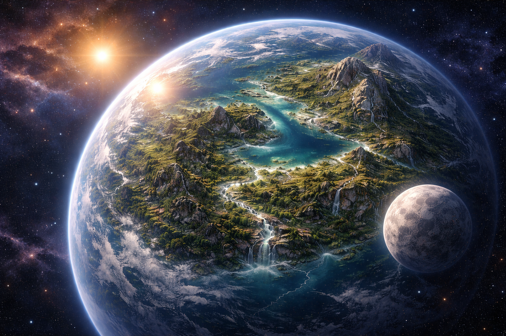

Description
Status: Living World
Classification: Class-IV Biogenic Planetary System
Sun: Yellow
Moon: 1
Terafna is a remote world beneath a gentle yellow sun, a planet shaped as much by living forces as by time itself. Here, stone is not inert—mountains rise as if grown rather than formed, and oceans carve valleys that seem to remember their own creation. At the heart of the world lies the Mother Stone, an ancient presence older than memory, from which the MoRoc—the Stoneborn—are brought forth in an endless cycle of emergence and return.
The planet’s Living Water gives rise to the MoRaw, the Waterborn, beings shaped by current, tide, and flow, while the living essence of the land itself breathes life into the MoRem, the Lifeborn, whose cycle is as old as the world’s first dawn. These births are not acts of will, but of balance—natural rhythms that have endured long before names were spoken.
Terafna is a realm that would feel familiar to those who still remember Earth. Blue skies stretch above landscapes rich with flora, and a single moon rises each night to cast its pale light across forests, plains, and stone. It is a world that appears tranquil on its surface, yet beneath it pulses a living system—ancient, patient, and profoundly alive.

The Three Children of Terafna
Terafna does not create life by chance.
It remembers.
From its deepest foundations rises the MoRoc, the Stoneborn—guardians shaped from living rock and time-worn patience. Though their forms resemble gargoyles of old myth, they are not creatures of wrath. The MoRoc are steady, contemplative beings, born of the Mother Stone to endure, to anchor, and to remember the long ages of the world. They move rarely, but when they do, mountains listen.
Where stone yields to flow, the MoRaw are born. The Waterborn emerge from Terafna’s Living Waters, taking shape as living currents given form and will. They are graceful and ever-changing, embodying motion, renewal, and memory carried forward. The MoRaw do not walk the land—they dance through it, shaping valleys, feeding forests, and carrying the quiet wisdom of rivers that have never stopped moving.
From the breath of the land itself arise the MoRem, the Lifeborn. They step free of bark and leaf, revealing forms touched by moss, root, and forest shadow. Their green eyes hold the stillness of deep woods, and their presence binds the cycles of growth and decay. The MoRem are neither rulers nor servants of Terafna—they are its voice, walking where the world must be heard.
Designed to carry an entire people beyond a dying sky, Hope’s unfinished ribs stretch for kilometers, each beam a promise of motion yet to come. Even in its skeletal state, it stands as both monument and warning—a testament to desperation, memory, and resolve. Its construction will span fifty years.
Together, the Stoneborn, Waterborn, and Lifeborn exist not as separate species, but as expressions of a single living world. Their cycles predate written memory, their balance older than names. As long as Terafna endures beneath its yellow sun and solitary moon, its children will rise—again and again—to ensure the world remembers itself.